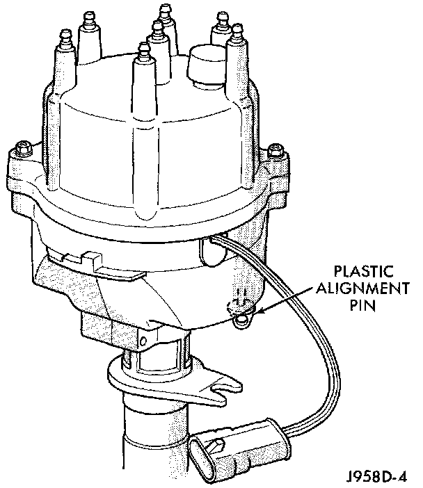
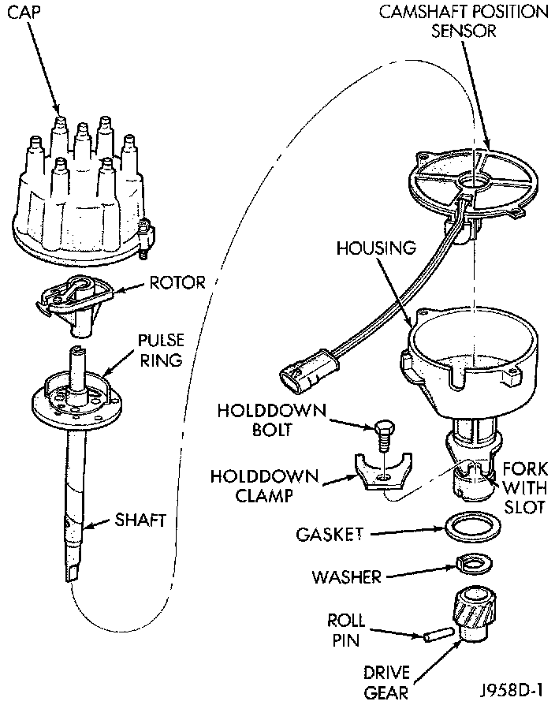
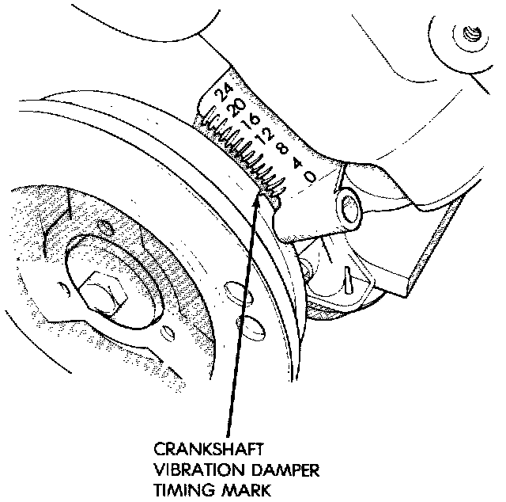
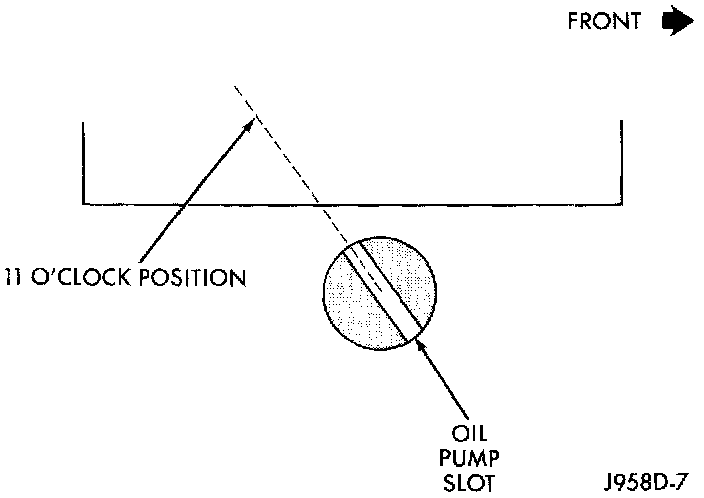
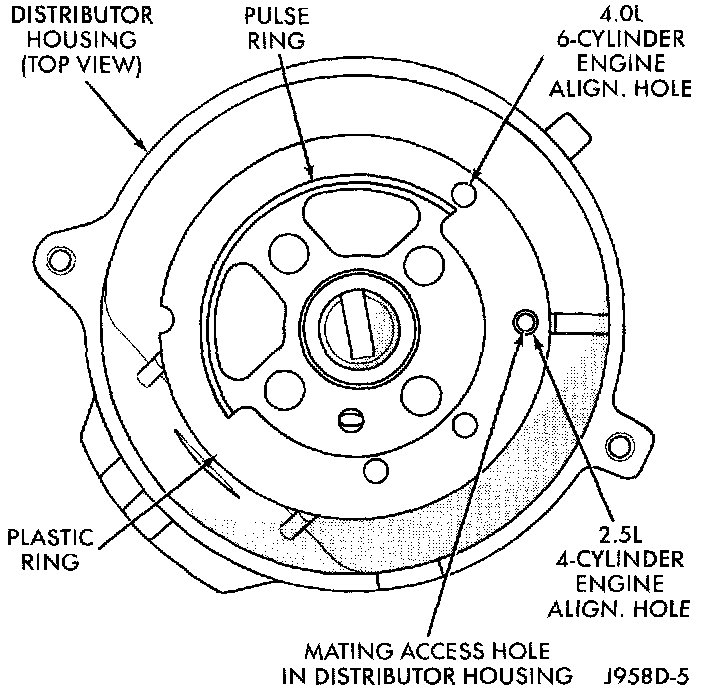
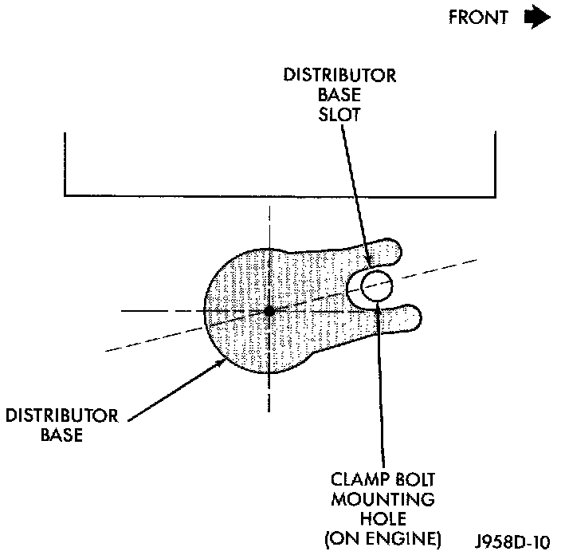
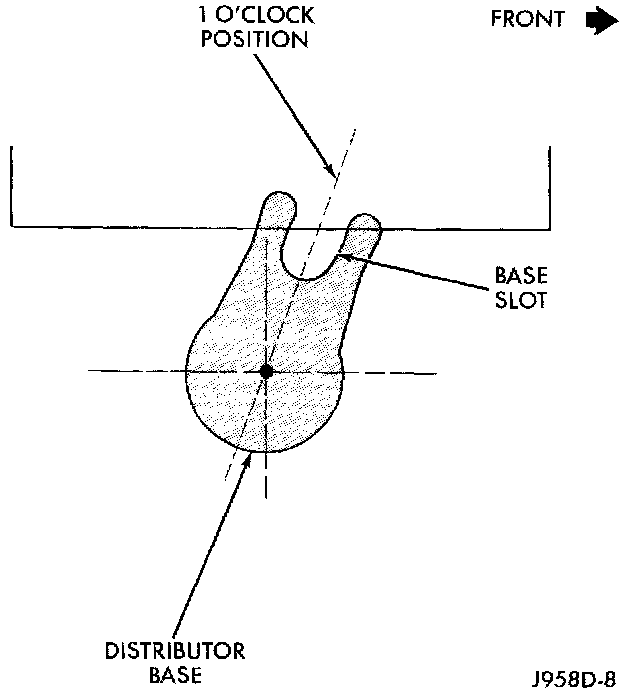

Distributor: Service and Repair
DISTRIBUTORAll distributors contain an internal oil seal that prevents oil from entering the distributor housing. The seal is not serviceable.
Fig. 36 Plastic Alignment Pin:

Factory replacement distributors are equipped with a plastic alignment pin already installed. The pin is located in an access hole on the bottom of the distributor housing (Fig. 36). It is used to temporarily lock the rotor to the cylinder number 1 position during installation. The pin must be removed after installing the distributor.
Fig. 37 Distributor:

The camshaft position sensor is located in the distributor on all 4.0L engines (Fig. 37). For removal/installation procedures, refer to Camshaft Position Sensor. Distributor removal is not necessary for sensor removal.
Refer to (Fig. 37) for an exploded view of distributor.
A fork with a slot is supplied on bottom of distributor housing where the housing base seats against engine block (Fig. 37). The centerline of the slot aligns with distributor holddown bolt hole in engine block. Because of the fork, the distributor cannot be rotated. Distributor rotation is not necessary as all ignition timing requirements are handled by the powertrain control module (PCM).
The position of distributor determines fuel synchronization only It does not determine ignition timing.
NOTE: Do not attempt to modify this fork to attain ignition timing.
REMOVAL
1. Disconnect negative battery cable at battery.
2. Disconnect coil secondary cable at coil.
3. Remove distributor cap from distributor (2 screws). Do not remove cables from cap. Do not remove rotor.
4. Disconnect distributor wiring harness 3-way connector from main engine harness.
5. Remove cylinder number 1 spark plug.
6. Hold a finger over the open spark plug hole. Rotate engine at vibration dampener bolt until compression (pressure) is felt.
Fig. 38 Timing Marks:

7. Slowly continue to rotate engine. Do this until timing index mark on vibration damper pulley aligns with top dead center (TDC) mark (0 degree) on timing degree scale (Fig. 38). Always rotate engine in direction of normal rotation. Do not rotate engine backward to align timing marks.
8. Remove distributor holddown bolt and clamp.
9. Remove distributor from engine by slowly lifting straight up.
10. Note that rotor will rotate slightly in a counterclockwise direction while lifting up the distributor. The oil pump gear will also rotate slightly in a counterclockwise direction while lifting up the distributor. This is due to the helical cut gears on distributor and camshaft.
11. Note removed position of rotor during distributor removal. During installation, this will be referred to as the Pre-position.
Fig. 39 Slot At 11 O'clock Position:

12. Observe slot in oil pump gear through hole on side of engine. It should be slightly before (counterclockwise of) the 11 o'clock position (Fig. 39).
13. Remove and discard old distributor-to-engine block gasket.
INSTALLATION
1. If engine crankshaft has been rotated after distributor removal, cylinder number 1 must be returned to its proper firing stroke. Refer to previous REMOVAL Step 5 and Step 6. These steps must be done before installing distributor.
2. Check position of slot on oil pump gear. It should be just slightly before (counterclockwise of) the 11 o'clock position (Fig. 39). If not, place a flat blade screwdriver into oil pump gear and rotate it into proper position.
3. Factory replacement distributors are equipped with a plastic alignment pin already installed (Fig. 36). This pin is used to temporarily hold the rotor to the cylinder number 1 firing position during distributor installation. If this pin is in place, proceed to Step 8. If not, proceed to next step.
4. If original distributor is to be reinstalled, such as during engine overhaul, the plastic pin will not be available. A 3/16 inch drift pin punch tool may be substituted for the plastic pin.
5. Remove camshaft position sensor from distributor housing. Lift straight up.
Fig. 40 Pin Alignment Holes:

6. Four different alignment holes are provided on the plastic ring (Fig. 40).
7. Rotate distributor shaft and install pin punch tool through proper alignment hole in plastic ring (Fig. 40) and into mating access hole in distributor housing. This will prevent distributor shaft and rotor from rotating.
8. Clean distributor mounting hole area of engine block.
9. Install new distributor-to-engine block gasket (Fig. 37).
10. Install rotor to distributor shaft.
Fig. 42 Distributor Engaged Position:

Fig. 41 Distributor Pre-position:

Pre-position distributor into engine while holding centerline of base slot in 1 o'clock position (Fig. 41). Continue to engage distributor into engine. The rotor and distributor will rotate clockwise during installation. This is due to the helical cut gears on the distributor and camshaft. when distributor is fully seated to engine block, the centerline of base slot should be aligned to clamp bolt mounting hole on engine (Fig. 42). The rotor should also be pointed at 5 o'clock position.
It may be necessary to rotate rotor and distributor shaft (very slightly) to engage distributor shaft with slot in oil pump gear. The same may have to be done to engage distributor gear with camshaft gear.
The distributor is correctly installed when:
^ the rotor is pointed at 5 o'clock position.
^ the plastic alignment pin (or pin punch tool) is still installed to distributor.
^ the number 1 cylinder piston is set at top dead center (TDC) (compression stroke).
^ the centerline of the slot at base of distributor is aligned to centerline of distributor holddown bolt hole on engine. In this position, the holddown bolt should easily pass through slot and into engine.
No adjustments are necessary. Proceed to next step.
11. Install distributor holddown clamp and bolt. Tighten bolt to 23 Nm (17 ft. lbs.) torque.
12. Remove pin punch tool from distributor. Or, if plastic alignment pin was used, remove it straight down from bottom of distributor. Discard plastic pin.
13. If removed, install camshaft position sensor to distributor. Align wiring harness grommet to notch in distributor housing.
14. Install rotor.
CAUTION: If distributor cap is incorrectly positioned on distributor housing, the cap or rotor may be damaged when engine is started.
15. Install distributor cap. Tighten distributor cap holddown screws to 3 Nm (26 in. lbs.) torque.
16. If removed, install spark plug cables to distributor cap. Proper firing order 1 - 5 - 3 - 6 - 2 - 4.
17. Connect distributor wiring harness to main engine harness.
18. Connect battery cable to battery.